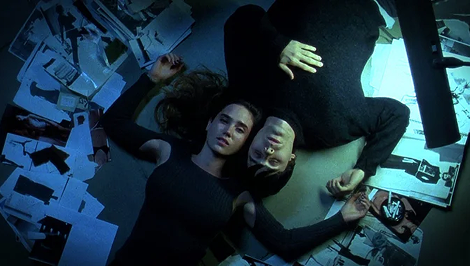
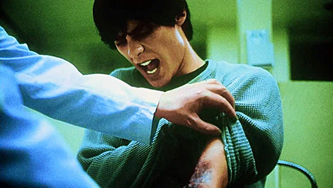
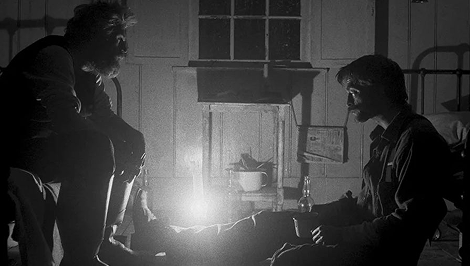
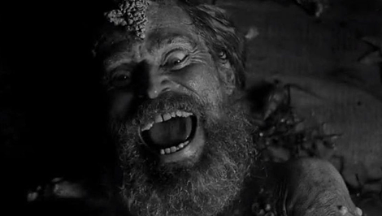
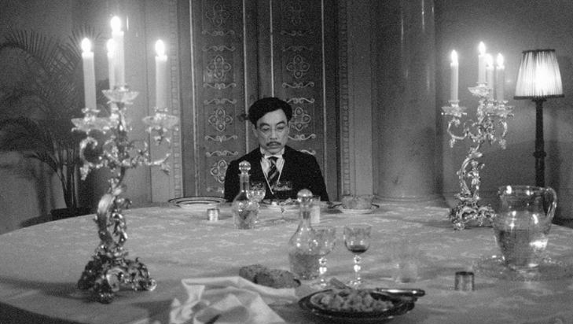

Существует целый пласт фильмов, которые формально не являются хоррором — их не ставят в раздел «ужасы», их не показывают на фестивалях жанрового кино — но которые пугают точнее и глубже, чем большинство признанных хорроров. Объединяет их одно: в них нет монстра. Нет маньяка с ножом, нет призрака в коридоре, нет инопланетного существа в вентиляционной шахте. Источник ужаса — атмосфера, звук, монтажный ритм или сама человеческая психика, работающая против своего носителя. Этот тип хоррора называют по‑разному — психологический, атмосферный, «пост-хоррор» — но суть одна: страх приходит изнутри, а не снаружи.
Даррен Аронофски снял «Реквием по мечте» без единого сверхъестественного элемента — и создал один из самых психологически травмирующих фильмов в истории кино. Холодильник, движущийся на Сару Голдфарб — не мистика: это галлюцинация пожилой женщины, разрушенной амфетаминами и телевизионным безумием. Аронофски снимает зависимость изнутри восприятия: субъективная камера, ускоренный монтаж, звуковой дизайн Клинта Мэнселла, где реальность и галлюцинация неотличимы — всё это работает как хоррор-инструментарий, применённый к бытовой трагедии. Монстр в фильме — не вещество и не болезнь. Монстр — это разрыв между мечтой и реальностью, который каждый персонаж расширяет собственными руками, и Аронофски снимает этот процесс с хирургической беспощадностью.


Роберт Эггерс снял «Маяк» в формате 1.19:1 — почти квадратный кадр, чёрно-белое изображение, зернистая плёнка — и поместил двух мужчин на скалу, где их единственным врагом является друг друг и собственный рассудок. Исследователи описывают ужас «Маяка» через концепцию философа Юджина Такера «мир-без-нас»: фильм создаёт ощущение вселенной, абсолютно безразличной к человеческому существованию. Маяк светит — но не для них. Море ревёт — но не из-за них. Они просто оказались здесь, и этот пейзаж переживёт их без малейшего усилия. Психологи ВШЭ, разбиравшие фильм в рамках киноклуба, зафиксировали главный вопрос, который он задаёт: происходящее реально или это распад психики? — и пришли к выводу, что Эггерс намеренно делает оба ответа одинаково ужасными.


Атмосферный хоррор — это искусство паузы. Хичкок называл это «саспенс»: не момент, когда бомба взрывается, а все двадцать минут перед взрывом, когда ты знаешь о ней, а герои — нет. В современном кино эту технику наиболее последовательно применяют авторы, работающие на стыке арт-хауса и хоррора, например, такие как Лукас Мудиссон в «Солнце». Его работу «Солнце» выделяет принципиальный отказ от скримеров. В этом лишнем времени, в этой паузе, в этих деталях — уже после того, как всё очевидно, и живёт самый честный страх.

Скример — это рефлекс, вздрагивание от резкого звука. Атмосферный ужас — это другое: он изменяет восприятие реальности за пределами экрана. Зрители «Реквиема по мечте» признаются, что после просмотра иначе смотрят на обычный холодильник. Зрители «Маяка» — что несколько дней не могут отделаться от ощущения безвоздушности пространства. Именно этот послеэффект, это изменение в восприятии обыденного, отличает большой хоррор от аттракциона. Монстр исчезает после финальных титров. Атмосфера — нет.